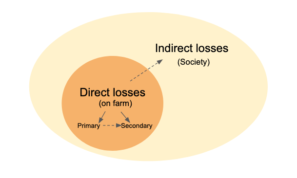
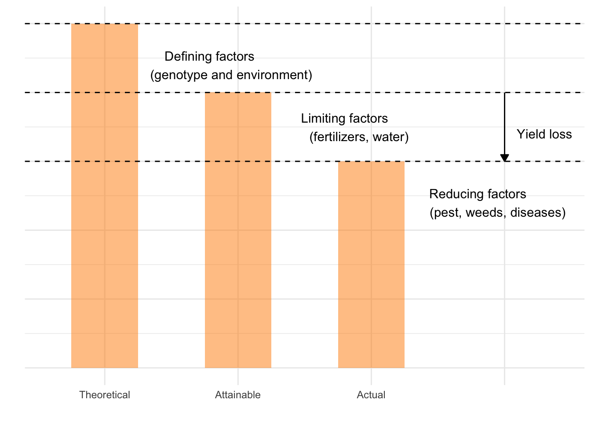

Plant disease epidemics significantly impact agricultural production, particularly affecting crop yield - the measurable produce such as seed, fruit, leaves, roots or tubers - and quality, which includes factors such as blemishes on fruit and toxins in grain. Studying these impacts is crucial to understanding the overall repercussions of plant diseases on agriculture.
The yield of some crops can be severely diminished if they host a pathogen for a prolonged period of time. The plant’s physiology is dynamically and negatively affected as the crop grows, leading to an increase in biomass and advancement through phenological stages. For some diseases that primarily infect the end product, like grains, yield is directly impacted with a reduction in size and weight of the affected plant part.
Certain plant diseases cause visual damage to the product, such as fruit or tubers, which may not result in a reduction in yield, but the presence of the symptoms can adversely affect sales due to decreased marketability. Furthermore, the presence of toxins in the product caused by some diseases can significantly downgrade its value, posing both health risks and economic losses.
Losses due to plant diseases can be categorized as direct, affecting the farm itself, or indirect, having broader impacts on society. Direct losses on the farm due to plant diseases are primarily due to reductions in the quantity and quality of yield, as well as the costs associated with disease control. These are classified as primary losses.
Secondary losses on the farm are indirect consequences of disease epidemics, such as the buildup of inoculum in the soil, which can lead to subsequent disease outbreaks. Other secondary impacts include the reduced efficacy of disease control methods due to the emergence of resistance to chemicals within the pathogen population over time.
In addition to these on-farm losses, plant diseases can have significant indirect impacts on society. These can include increased food prices due to reduced supply, loss of export markets due to trade restrictions, and environmental damage due to increased use of pesticides. Understanding the full spectrum of losses caused by plant diseases is critical for developing effective disease management strategies and policies.

Figure 17.1: Tipology of losses caused by plant diseases
The famous epidemics in the ancient history, such as the late blight of potatoes, serve us as a remind of worst-case scenarios of major impact of epidemics causing both direct and indirect losses. However, crop losses due to diseases occur regularly and at levels that depend on the intensity of epidemics (Madden et al. 2007). Expert opinion estimates have indicated that around 20% (on average) of the yield of major crops like wheat, rice, maize, potato and soybean is lost due to the pests and pathogens globally (Savary et al. 2019).
17.2 Crop loss assessment
According to Madden et al. (2007), knowledge about the disease:yield relationship falls within crop loss assessment, a general branch of epidemiology that study the relationship between the attack by harmful organisms and the resulting yield (or yield loss) of crops. In fact, the study (analysis and modeling) of crop losses is considered central to plant pathology as no plant protection scientific reasoning could be possible without a measure of crop loss (Savary et al. 2006).
The concept of yield levels is important to recognize as a framework to study crop losses. There are three levels (from higher to lower) of yield: theoretical, attainable and actual.
Theoretical (also known as potential) yield is determined mainly by defining factors such as the genotype of the crop grown under ideal conditions. It can be obtained in experimental plots managed with high input of fertilizers and pesticides.
Attainable yield is obtained in commercial crops managed with a full range of modern technology to maximize yield. It considers the presence of limiting factors such as water and fertilizers.
Actual yield is generally less than or equal to attainable yield, and is obtained under the effect of reducing factors such as those caused by pest (disease, insects, weeds) injuries - defined as measurable symptom caused by a harmful organism. It is the crop yield actually harvested in a farmer’s field.
Yield loss (expressed in absolute or relative terms) is the difference between the attainable and the actual yield. Yield loss studies are only possible when reliable field data are collected in sufficient number to allow the development of statistical (empirical) models as well as the validation of mechanistic simulation yield loss models.
Code
library(tidyverse)yl <- tibble::tribble(~yield, ~value, ~class,"Theoretical", 25,1,"Attainable", 20,2,"Actual", 15,3,"", 0, 4)yl |>ggplot(aes(reorder(yield,-value), value, fill = class))+geom_col(width =0.5)+ r4pde::theme_r4pde(font_size =14)+ ggthemes::scale_fill_gradient_tableau(palette ="Green")+geom_hline(yintercept =25, linetype =2, color ="gray60")+geom_hline(yintercept =20, linetype =2, color ="gray60")+geom_hline(yintercept =15, linetype =2, color ="gray60")+theme(legend.position ="none", axis.text.y=element_blank(),axis.ticks.x =element_blank())+annotate(geom ="text", x =1.8, y =22, label ="Defining factors (genotype and environment)")+annotate(geom ="text", x =2.8, y =17.5, label ="Limiting factors (fertilizers, water)")+annotate(geom ="text", x =3.8, y =12, label ="Reducing factors (pest, weeds, diseases)")+annotate("segment", x =4, y =20, xend =4, yend =15,arrow =arrow(type ="closed", length =unit(0.02, "npc")))+annotate(geom ="text", x =4.3, y =17, label ="Yield loss")+labs(x ="", y ="")

Figure 17.2: Yield levels
17.3 Generating disease:yield data
The datasets utilized to characterize a disease-yield relationship should ideally encompass a broad spectrum of yield and disease values. There are primarily two approaches to acquiring such data:
conducting experiments in controlled environments such as fields or greenhouses
conducting surveys in commercial fields that are naturally infected.
In experimental setups, researchers rely on different treatments that are designed to result in varying disease epidemics, under the assumption that the disease has an impact on yield. These treatments often include manipulating the level of inoculum when the disease is expected to be minimal. This is achieved through inoculations with different amounts of the pathogen. Conversely, when the disease is expected to be severe, researchers might use fungicides at different rates, frequencies, or timings. An alternative strategy is to use different host genotypes, preferably isolines or near-isolines, which exhibit varying degrees of susceptibility to the disease. Another method is to manipulate the environment, for example by altering the irrigation levels.
17.4 Damage curves
In any case, the relationship between a measure of yield (either absolute or relative) and the disease variable can be evaluated using scatter plots that depict a “damage curve” (Madden et al. 2007). The disease variable most commonly represents the assessment of the disease at a singular critical point. However, sometimes data obtained from multiple assessments throughout the disease epidemic is used to calculate the area under the disease progress curve, which is then used to represent the disease variable. This offers a more comprehensive view of the disease’s impact over time, and can better capture the complex relationships between disease progression and yield loss (Madden et al. 2007).
Let’s work with actual data on the incidence of white mold disease and yield of soybean determined across different locations and years in Brazil (Lehner et al. 2016). The variation in disease and yield was obtained by applying different fungicides that varied in efficacy, thus resulting in variable final disease incidence. The data was made freely available in this repository and was included the the package that accompanies the book.
As seen above, the full data set has 17 variables. Let’s reduce the data set to a few variables of interest (study, inc and yld) and the trials number 1 to 4.
Figure 17.4: Relationship between soybean yield and incidence of white mold across trials. Observed (left) and fitted regression lines (right)
Lehner, M. S., Pethybridge, S. J., Meyer, M. C., and Del Ponte, E. M. 2016. Meta-analytic modelling of the incidenceyield and incidencesclerotial production relationships in soybean white mould epidemics. Plant Pathology 66:460–468. https://doi.org/10.1111/ppa.12590.
Madden, L. V., Hughes, G., and Bosch, F. van den, eds. 2007. CHAPTER 12: Epidemics and crop yield. In The American Phytopathological Society, pp. 353–388. https://doi.org/10.1094/9780890545058.012.
Savary, S., Teng, P. S., Willocquet, L., and Nutter, F. W. 2006. Quantification and Modeling of Crop Losses: A Review of Purposes. Annual Review of Phytopathology 44:89–112. https://doi.org/10.1146/annurev.phyto.44.070505.143342.
Savary, S., Willocquet, L., Pethybridge, S. J., Esker, P., McRoberts, N., and Nelson, A. 2019. The global burden of pathogens and pests on major food crops. Nature Ecology & Evolution 3:430–439. https://doi.org/10.1038/s41559-018-0793-y.